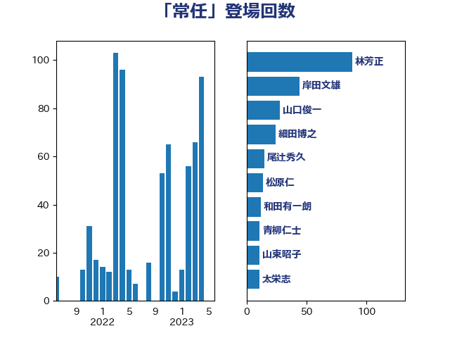

単語「常任」

| 林芳正 | 自由民主党 | 88 回 |
| 岸田文雄 | 自由民主党 | 44 回 |
| 山口俊一 | 自由民主党 | 28 回 |
| 細田博之 | 自由民主党 | 24 回 |
| 尾辻秀久 | 無所属 | 15 回 |
| 松原仁 | 立憲民主党 | 14 回 |
| 和田有一朗 | 日本維新の会 | 12 回 |
| 青柳仁士 | 日本維新の会 | 11 回 |
| 山東昭子 | 自由民主党 | 11 回 |
| 太栄志 | 立憲民主党 | 11 回 |
| 篠原豪 | 立憲民主党 | 10 回 |
| 小田原潔 | 自由民主党 | 10 回 |
| 務台俊介 | 自由民主党 | 10 回 |
| 高木毅 | 自由民主党 | 8 回 |
| 鈴木敦 | 国民民主党 | 8 回 |
| 山本太郎 | れいわ新選組 | 8 回 |
| 宮本岳志 | 日本共産党 | 7 回 |
| 羽田次郎 | 立憲民主党 | 6 回 |
| 猪口邦子 | 自由民主党 | 6 回 |
| 金子道仁 | 日本維新の会 | 5 回 |
| 浜田靖一 | 自由民主党 | 5 回 |
| 浅川義治 | 日本維新の会 | 5 回 |
| 沢田良 | 日本維新の会 | 5 回 |
| 斎藤アレックス | 国民民主党 | 5 回 |
| 吉田宣弘 | 公明党 | 5 回 |
| 池田佳隆 | 自由民主党 | 4 回 |
| 山田賢司 | 自由民主党 | 4 回 |
| 小西洋之 | 立憲民主党 | 4 回 |
| 吉川沙織 | 立憲民主党 | 4 回 |
| 上田清司 | 国民民主党 | 4 回 |
| 音喜多駿 | 日本維新の会 | 3 回 |
| 青木愛 | 立憲民主党 | 3 回 |
| 野田佳彦 | 立憲民主党 | 3 回 |
| 福岡資麿 | 自由民主党 | 3 回 |
| 山口那津男 | 公明党 | 3 回 |
| 高野光二郎 | 自由民主党 | 2 回 |
| 高良鉄美 | 無所属 | 2 回 |
| 馬場伸幸 | 日本維新の会 | 2 回 |
| 青山繁晴 | 自由民主党 | 2 回 |
| 谷合正明 | 公明党 | 2 回 |
| 清水貴之 | 日本維新の会 | 2 回 |
| 浅田均 | 日本維新の会 | 2 回 |
| 池下卓 | 日本維新の会 | 2 回 |
| 武見敬三 | 自由民主党 | 2 回 |
| 橋本岳 | 自由民主党 | 2 回 |
| 森山浩行 | 立憲民主党 | 2 回 |
| 東徹 | 日本維新の会 | 2 回 |
| 新藤義孝 | 自由民主党 | 2 回 |
| 小野寺五典 | 自由民主党 | 2 回 |
| 和田政宗 | 自由民主党 | 2 回 |
| 古川禎久 | 自由民主党 | 2 回 |
| 住吉寛紀 | 日本維新の会 | 2 回 |
| 井上哲士 | 日本共産党 | 2 回 |
| 三木圭恵 | 日本維新の会 | 2 回 |
| 黄川田仁志 | 自由民主党 | 1 回 |
| 高橋光男 | 公明党 | 1 回 |
| 長谷川英晴 | 自由民主党 | 1 回 |
| 鈴木宗男 | 日本維新の会 | 1 回 |
| 遠藤敬 | 日本維新の会 | 1 回 |
| 西村智奈美 | 立憲民主党 | 1 回 |
| 藤田文武 | 日本維新の会 | 1 回 |
| 萩生田光一 | 自由民主党 | 1 回 |
| 茂木敏充 | 自由民主党 | 1 回 |
| 若林健太 | 自由民主党 | 1 回 |
| 紙智子 | 日本共産党 | 1 回 |
| 笠井亮 | 日本共産党 | 1 回 |
| 稲田朋美 | 自由民主党 | 1 回 |
| 福田昭夫 | 立憲民主党 | 1 回 |
| 福山哲郎 | 立憲民主党 | 1 回 |
| 礒崎哲史 | 国民民主党 | 1 回 |
| 石破茂 | 自由民主党 | 1 回 |
| 石井苗子 | 日本維新の会 | 1 回 |
| 石井啓一 | 公明党 | 1 回 |
| 牧原秀樹 | 自由民主党 | 1 回 |
| 湯原俊二 | 立憲民主党 | 1 回 |
| 渡辺周 | 立憲民主党 | 1 回 |
| 渡辺創 | 立憲民主党 | 1 回 |
| 清水真人 | 自由民主党 | 1 回 |
| 浜口誠 | 国民民主党 | 1 回 |
| 水野素子 | 立憲民主党 | 1 回 |
| 櫻井周 | 立憲民主党 | 1 回 |
| 森本真治 | 立憲民主党 | 1 回 |
| 森屋宏 | 自由民主党 | 1 回 |
| 梅谷守 | 立憲民主党 | 1 回 |
| 柴田巧 | 日本維新の会 | 1 回 |
| 柳ヶ瀬裕文 | 日本維新の会 | 1 回 |
| 松山政司 | 自由民主党 | 1 回 |
| 本村伸子 | 日本共産党 | 1 回 |
| 末松信介 | 自由民主党 | 1 回 |
| 木村次郎 | 自由民主党 | 1 回 |
| 早坂敦 | 日本維新の会 | 1 回 |
| 新妻秀規 | 公明党 | 1 回 |
| 斎藤嘉隆 | 立憲民主党 | 1 回 |
| 平沼正二郎 | 自由民主党 | 1 回 |
| 平木大作 | 公明党 | 1 回 |
| 岩渕友 | 日本共産党 | 1 回 |
| 山谷えり子 | 自由民主党 | 1 回 |
| 山添拓 | 日本共産党 | 1 回 |
| 山本順三 | 自由民主党 | 1 回 |
| 山本博司 | 公明党 | 1 回 |
| 宮崎勝 | 公明党 | 1 回 |
| 堤かなめ | 立憲民主党 | 1 回 |
| 堀井巌 | 自由民主党 | 1 回 |
| 吉良州司 | 無所属 | 1 回 |
| 佐々木紀 | 自由民主党 | 1 回 |
| 仁比聡平 | 日本共産党 | 1 回 |
| 井上信治 | 自由民主党 | 1 回 |
| 丸川珠代 | 自由民主党 | 1 回 |
| 中島克仁 | 立憲民主党 | 1 回 |
| 下条みつ | 立憲民主党 | 1 回 |
| 三上えり | 立憲民主党 | 1 回 |
| 三ッ林裕巳 | 自由民主党 | 1 回 |